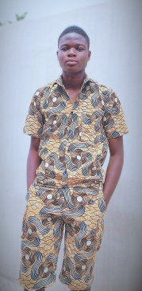

BIENVENU SUR MON SITE WEB


ADODEME Flodias
C-DESCRIPTION
Je me nomme Flodias. Je suis étudiant en première année à ENEAM (Ecole Nationale d'Economie Appliquée et de Management), une école de l'Université d'Abomey-Calavi (UAC). Ma filière c'est l'informatique de gestion et je compte me spécialisé aussi bien en Administration des Réseaux Informatique qu'en Analyse Informatique et Programation aprés ma licence. Le loisir que j'aime le plus est le sport. Il constitue en même ma passion en plus de l'informatique. J'aime bien parler l'anglais mais je ne maîtrise pas encore la langue.J'ai eu mon BEPC et mon BAC avec la mention bien.Je suis né à Bohicon,une ville dans le département de Zou, le 10/062007,moi même je suis originaire de SAVALOU dans les COLLINES. En général je suis curieux avec tout ce qui a rapport avec la connaissance surtout dans le domaine scientifique.